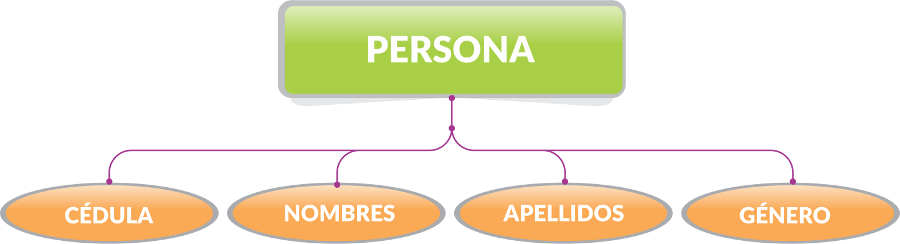
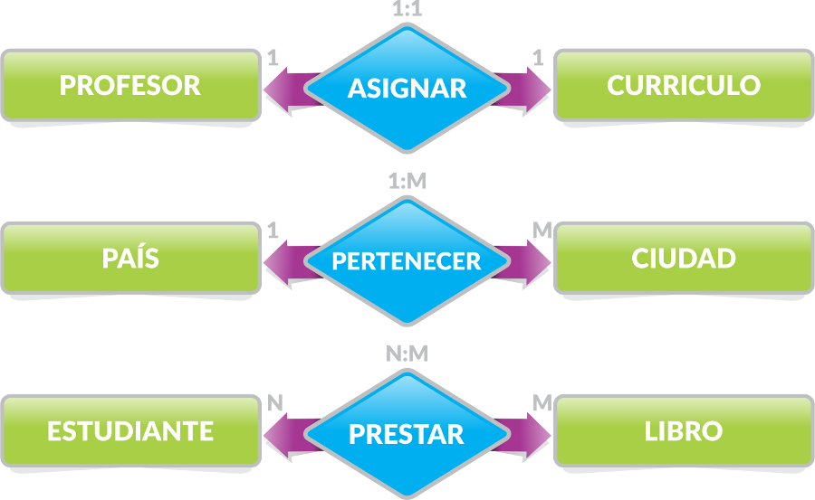
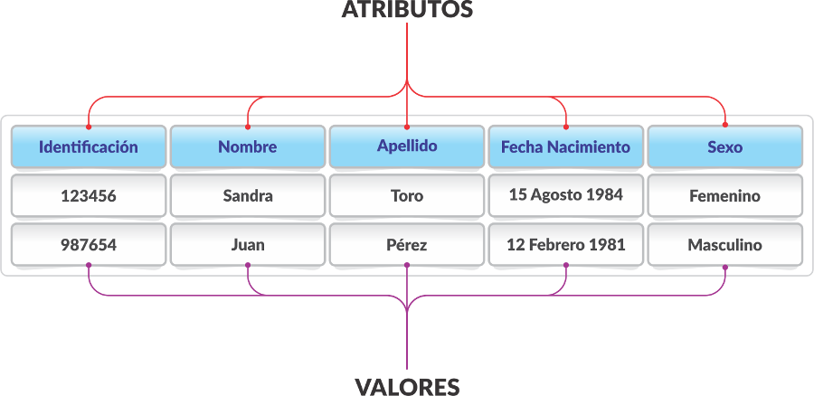
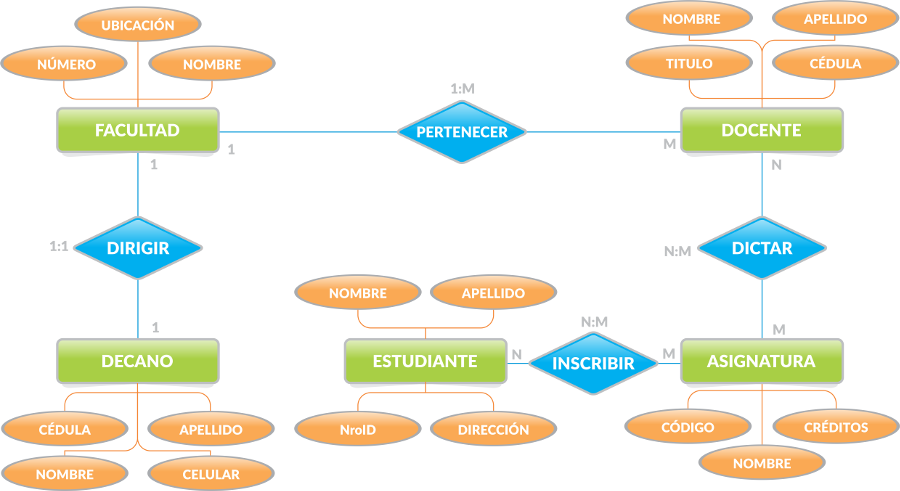

🎨 Modelo Entidad-Relación (MER)
¿Qué es el Modelo Entidad-Relación?
El Modelo Entidad-Relación (MER) es una herramienta fundamental para
el diseño conceptual de bases de datos. Permite representar de
manera gráfica y clara la estructura de los datos que se van a
almacenar, facilitando la comunicación entre analistas, diseñadores
y desarrolladores.
Analogía: En la arquitectura se utilizan los planos
para diseñar y elaborar el diseño de futuras construcciones. En
bases de datos, el modelo entidad relación (MER) cumple el papel del
plano en la arquitectura,
nos permite planificar cómo quedará nuestra base de datos, para
que sea funcional y optimizada.
🎨 Ejemplos de Entidades
Las entidades representan objetos del mundo real que pueden ser
identificados de manera única.
📋 Conceptos Fundamentales
🏢 Entidad
Una entidad es un objeto del mundo real que puede
ser identificado de manera única. Representa algo sobre lo cual
queremos almacenar información.
Definición clave: Las entidades son TODO aquello
donde podamos guardar información. Ya sea un objeto del mundo real
(como una persona) o algo abstracto (como una cuenta bancaria).
Ejemplos de Entidades:
-
PERSONA - Individuo con
características únicas
-
LIBRO - Objeto con información
específica
-
MASCOTA - Animal con atributos
particulares
Otros Ejemplos:
- Estudiante
- Profesor
- Curso
- Libro
📝 Atributo
Un atributo es una característica o propiedad de
una entidad que describe alguna información específica sobre ella.
Pregunta clave: ¿Qué datos necesito tomar de cada
entidad? Son todas aquellas características que nos interesa
almacenar.
Ejemplo Visual de Entidad y Atributos:

Ejemplo de Entidad PERSONA:
-
cédula - Identificación única
de la persona
-
nombres - Nombres de la persona
-
apellidos - Apellidos de la
persona
-
género - Género de la persona
🔗 Relación
Una relación es una asociación entre dos o más
entidades que representa una interacción o dependencia entre
ellas.
¿Cómo detectar una relación? Identificando los
procesos. ¿Para qué estamos creando este sistema? Para vender! Ese
es nuestro proceso y por consecuente nuestra relación.
Ejemplo Visual de Relación:
Ejemplo de Relaciones:
Otros Ejemplos:
-
Estudiante
inscribe
Curso
-
Profesor
enseña
Curso
-
Estudiante
presta
Libro
🔑 Clave Primaria
Una clave primaria es un atributo o conjunto de
atributos que identifica de manera única cada instancia de una
entidad.
Pregunta clave: ¿Cómo identifico una instancia de
otra? Es el campo que nos permite identificar un dato de otro de
manera inconfundible e irrepetible.
Ejemplo de Clave Primaria:
¿Cómo identifico una persona de otra?
-
¿Por el nombre? No... porque puedo tener muchas personas con
el mismo nombre
-
¿Por la dirección? No... porque pueden vivir en la misma
dirección
- ¿Por la cédula? ¡SÍ! La cédula es única e irrepetible
Claves primarias:
- cédula - Para PERSONA
- código - Para LIBRO
🎯 Tipos de Entidades
💪 Entidad Fuerte
Una entidad fuerte es aquella que puede existir
independientemente y tiene su propia clave primaria.
Características:
- Tiene clave primaria propia
- Puede existir sin depender de otras entidades
- Se representa con un rectángulo
🤝 Entidad Débil
Una entidad débil es aquella que depende de otra
entidad para su identificación y no puede existir por sí sola.
Características:
- No tiene clave primaria propia
- Depende de una entidad fuerte
- Se representa con un rectángulo de doble línea
🔢 Cardinalidades
¿Qué es la Cardinalidad?
La cardinalidad indica cuántas instancias de una
entidad pueden estar relacionadas con cuántas instancias de otra
entidad.
🔢 Tipos de Cardinalidades

Los tres tipos principales de cardinalidades en el modelo
entidad-relación.
1:1 (Uno a Uno)
Cada instancia de A se relaciona con exactamente una instancia de
B, y viceversa.
Ejemplo:
Profesor ↔
Cubículo
Un profesor puede tener 1 cubículo, cada cubículo puede ser usado
por 1 solo profesor.
1:N (Uno a Muchos)
Una instancia de A puede relacionarse con muchas instancias de B,
pero cada B se relaciona con una sola A.
Ejemplo:
General →
Soldado
Un general puede tener muchos soldados a su mando, los soldados
solo pueden tener 1 general.
Biblioteca:
Estudiante →
Libro
Un estudiante puede prestar muchos libros, cada libro solo puede
ser prestado por un estudiante a la vez.
N:N (Muchos a Muchos)
Una instancia de A puede relacionarse con muchas instancias de B,
y viceversa.
Ejemplo:
Equipo ↔
Estadio
Los equipos pueden jugar en muchos estadios, en los estadios
pueden jugar muchos equipos.
🎯 Cardinalidad del Sistema Universitario
Basado en nuestro ejemplo del sistema universitario, podemos ver
diferentes tipos de cardinalidades:
-
1:1 - Un decano dirige una
facultad
-
1:N - Una facultad tiene muchos
docentes
-
N:M - Un docente dicta muchas
asignaturas, una asignatura puede ser dictada por muchos docentes
🔗 Tipos de Relaciones
🔗 Relación Binaria
Es la más famosa y común.
Es cuando solamente dos entidades están relacionadas
a través de sus atributos.
Ejemplo:
CLIENTES ←→
Comprar ←→
VEHÍCULOS
Es una relación binaria porque solo dos entidades se relacionan.
🔗 Relación Ternaria
Es cuando tenemos
tres entidades interactuando entre sí. No son tan
comunes y suelen aparecer con cardinalidades de mucho a mucho.
Ejemplo:
PROFESOR ←→
Enseña ←→
CURSO ←→
AULA
Tres entidades relacionadas: profesor enseña curso en aula.
📊 Tipos de Atributos
📋 Atributos y Valores

Los atributos son las características (columnas) y los valores
son los datos específicos (filas).
🔑 Atributos Clave
-
Simple: No se puede dividir (ej: edad, nombre)
-
Compuesto: Se puede dividir en sub-atributos
(ej: dirección → calle, ciudad, código postal)
-
Único: Identifica de manera única cada
instancia
-
Múltiple: Puede tener varios valores (ej:
teléfonos)
📝 Atributos Descriptivos
-
Obligatorio: Debe tener un valor (ej: nombre)
- Opcional: Puede ser nulo (ej: teléfono)
-
Derivado: Se calcula a partir de otros
atributos (ej: edad a partir de fecha_nacimiento)
-
Almacenado: Se guarda físicamente en la base de
datos
🏗️ Proceso de Diseño MER
Paso 1: Identificar Entidades
Analiza el problema y determina qué objetos del mundo real necesitas
representar.
Preguntas clave:
- ¿Qué información necesito almacenar?
- ¿Cuáles son los objetos principales del sistema?
- ¿Qué entidades son independientes?
Paso 2: Identificar Atributos
Para cada entidad, determina qué características necesitas
almacenar.
Consideraciones:
- ¿Qué información es relevante para el negocio?
- ¿Cuáles atributos son únicos?
- ¿Hay atributos que se pueden derivar?
Paso 3: Identificar Relaciones
Determina cómo se relacionan las entidades entre sí.
Preguntas clave:
- ¿Cómo interactúan las entidades?
- ¿Qué dependencias existen entre ellas?
- ¿Cuál es la cardinalidad de cada relación?
Paso 4: Definir Claves Primarias
Asigna identificadores únicos a cada entidad.
Recomendaciones:
- Usa identificadores numéricos cuando sea posible
- Evita claves primarias compuestas
- Asegúrate de que sean únicas y estables
⚠️ Errores Comunes
❌ Errores Frecuentes en el Diseño MER
-
Entidades mal definidas: No distinguir entre
entidades y atributos
-
Relaciones incorrectas: Cardinalidades mal
definidas
-
Atributos en relaciones: Colocar atributos en el
lugar incorrecto
-
Redundancia: Incluir información que se puede
derivar
-
Falta de normalización: No seguir las reglas de
diseño
✅ Mejores Prácticas
🎯 Consejos para un Buen Diseño MER
-
Nombres claros: Usa nombres descriptivos y
consistentes
- Simplicidad: Evita la sobre-complejidad
-
Consistencia: Mantén un estilo uniforme en todo
el diagrama
-
Validación: Revisa el diseño con usuarios finales
-
Documentación: Documenta las decisiones de diseño
🎨 Ejemplo Completo: Sistema Universitario
📊 Diagrama MER del Sistema Universitario
📋 Enunciado del Problema:
En una universidad: Las facultades son dirigidas
por un decano y a su vez, un decano dirige una facultad.
Cada facultad cuenta con una serie de docentes, pero cada docente
solo puede pertenecer a una facultad.
Cada docente dicta varias asignaturas, así mismo una misma
asignatura la pueden dictar docentes diferentes.
Los estudiantes inscriben las asignaturas que le corresponde cada
semestre.
📝 Información Requerida:
De las facultades: nombre, ubicación y número
de bloque.
De los decanos: cédula, nombres, apellidos y
celular.
De los docentes: cédula, nombres, apellidos y
título.
De las asignaturas: código, nombre y número de
créditos.
De los estudiantes: identificación, nombres,
apellidos y dirección de residencia.
Teniendo esta información lo primero que debemos hacer es sacar
un listado de las entidades y relaciones que allí
identifiquemos.

🎯 Entidades Identificadas:
-
FACULTAD - Sección de la universidad
-
DECANO - Persona que dirige una
facultad
-
DOCENTE - Profesor que dicta
asignaturas
-
ASIGNATURA - Materia que se imparte
-
ESTUDIANTE - Persona que estudia
🔗 Relaciones Identificadas:
-
DIRIGIR - Entre Facultad y
Decano (1:1)
-
PERTENECER - Entre Facultad y
Docente (1:N)
-
DICTAR - Entre Docente y
Asignatura (N:M)
-
INSCRIBIR - Entre Asignatura y
Estudiante (N:M)
📝 Atributos de cada Entidad:
-
FACULTAD:
nombre,
ubicación,
número
-
DECANO: cédula,
nombres,
apellidos,
celular
-
DOCENTE: cédula,
nombres,
apellidos,
título
-
ASIGNATURA:
código,
nombre,
créditos
-
ESTUDIANTE:
identificación,
nombres,
apellidos,
dirección
🚀 Siguiente Paso
Una vez que tengas tu modelo MER bien definido, el siguiente paso es
transformarlo en un Modelo Relacional. Esto te
permitirá implementar tu diseño en una base de datos real.
Continúa con:
Del Modelo Conceptual al Modelo Relacional →